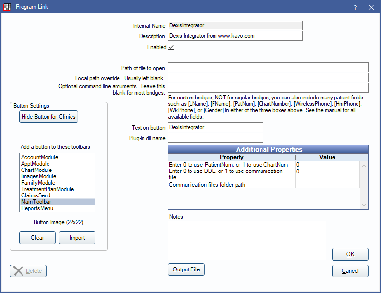

Dexis Integrator Bridge
In the Main Menu, click Setup, Program Links. Double-click on Dexis Integrator from www.kavo.com.
Dexis Integrator allows offices to bridge to the Dexis Integrator App. This allows offices to use RDP to connect with Dexis.
Website: https://www.kavo.com/en-us/.
To enable the bridge:
- Check the Enabled box.
- Double-click on Additional Properties to change settings.
- Use the PatNum (enter 0) or ChartNum (enter 1) as the patient ID.
- Determine how to transfer patient information to Dexis. Enter 0 to use DDE (default) or 1 to use a Communication File (text file).
- If using a Communication File, enter the folder path where the files are stored. See below for details.
- Set up a clickable bridge button:
- Under Add a button to these toolbars, highlight where to display the button.
- Enter the Text on button.
- (Optional) Import an image to show on the button (22 x 22 pixels).
- If using clinics, click Hide Button for Clinics. Select which clinics the button should display on.
- Click OK.
Technical Data
The selected patient information is sent to the Integrator software and the Integrator will forward that info to the local PC to launch Dexis locally with the selected patient. It will cause the RDP session to be minimized and when the local Dexis is closed the RDP session will be maximized again.
Communication File
If using a Communication File:
- Create a single folder where open dental will store the communication files and where Dexis will then read them from. This folder should be on a local hard disk. (e.g., C:\Dexis\commFiles)
- When installing the integrator, edit the Integra.ini file:
pms=Open Dental
path=< Enter File Path Here >
link=dexfil- File Path must be the full path name including the name of the file. (e.g., C:\Dexis\commFiles\Patient_< Station> .txt)
- Patient_< Station> .txt must be appended to the file path for the Communication File to work.
- < Station> is a special variable that the integrator will interpret to get the end client workstation name. The program link will write in this full file name, and it should match with the workstation name that the Integrator determines as well.
- File Path must be the full path name including the name of the file. (e.g., C:\Dexis\commFiles\Patient_< Station> .txt)